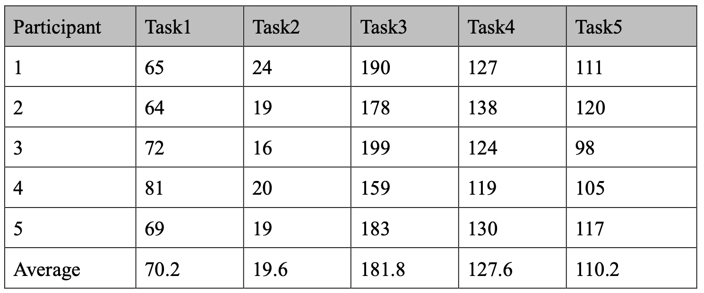
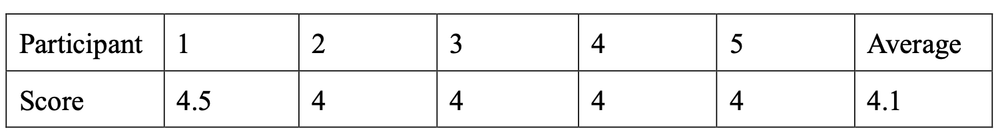
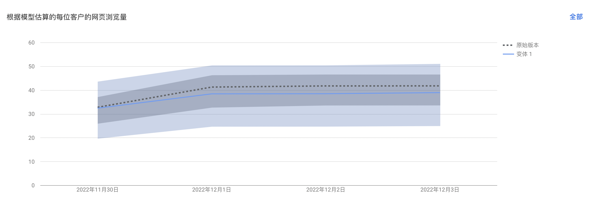

On the one hand, the platform is built to provide one-stop services for college students in Hong Kong to go on a trip, from getting inspiration for going out, to joining or creating activities to find companions and posting and sharing, reducing the fatigue caused by users jumping back and forth between different platforms. On the other hand, for activity organizers, the website helps them to accurately place activities and increase the exposure rate of activities, obtaining income. Therefore, the key assumptions of the platform need to be verified to improve user experience and increase user retention, so as to achieve cooperation with advertisers.
Usability Test
Usability is a qualitative study which can have more detailed observation and research on user experience. Because the platform aims to provide users with a one-stop experience, from getting inspiration to go out and play, to joining or posting related activities to find companions, and posting reviews after the activities, therefore, the usability test will also focus on this core function for verification. The specific steps are as follows:
Suppose you want to arrange some activities and find partners for your leisure time.
- Register and log in
- Where would you click to get information about recent or popular activities?
- How would you join activities organized by others? How would you get more details, and what information can you get before joining? How would you get in touch with the organizer?
- Post activity to recruit partners. And change it to add some details. Then delete it after you find your partners.
- How could you share your experience with others? How can you change your post?
Users will be able to explore the site freely after completing the required tasks. Three post-test questions were also designed to obtain recommendations for improvement:
- Please rate the overall process: 5 as very satisfied, 1 as very dissatisfied
- What difficulties did you encounter in the process?
- How do you think the page can be improved?
The usability result can be seen as follows:
Figure 1. Time on Task(seconds)
Figure 2. Satisfaction
Compared to the previous test, the average time spent on individual tasks increased because all the information boxes were required to be entered on the website, which is a normal fluctuation of the data. Besides, all five testers completed all five tasks successfully, indicating that the adjustments made to the website based on the last user feedback were effective. The above tasks were completed smoothly, indicating that the design of the web page in these aspects was reasonable and in line with the user's habits, and the website also provided enough hints to help users complete the operations. However, there are still areas of the website that need improvement:
Design
- Some of the background images needed to be adjusted to reduce interference with the text reading.
- Because the overall tone of the website is relaxed and happy, the font of Chinese characters also needs to be adjusted to make the overall style of the website more coordinated.
- The layout of the login/registration page is a bit cumbersome, with three login/registration settings, which is easy for users to misunderstand, so the content needs to be simplified.
- For the navigation bar, the content of the bottom navigation bar should be adjusted to reduce the duplication of content. The header navigation bar needs to be adjusted to be more responsive, as it will be deformed after shrinking.
Usability
- Hope to be able to directly link to related group information through '热门活动' so that if there is one, I can directly choose to join, and if not, I can create it on my own. So that users can directly go to search for related activities to join after seeing an activity they are interested in, instead of switching between different pages through the navigation bar.
- When on the '加入活动' page, if you can't find the relevant event through search, users should be given the corresponding prompt and link to create the event, so the process is smoother.
- The navigation bar should have pages that can be jumped to, whether it is a first-level option or a second-level option. Otherwise, it will make users think there might be an error on the website.
- Users can jump directly to the login page after registration or the logged-in status to the home page.
AB Test
AB test, in response to the feedback from users in the last round of usability, the possible misunderstanding of "发现活动", so this ABtest mainly tested the navigation bar. Because the navigation bar is an essential basis for users to jump between different pages, the setting of the navigation bar plays a vital role in whether users can find what they want clearly. Moreover, "发现活动" plays an important role in providing users with inspiration for activities and stimulating users' interest. Therefore, in the ABtest setting for the navigation bar, "发现活动" is the original version, and "活动灵感" is the variant 1 version.
Figure 3. AB Test Result
The results show that the difference between the original version and variant 1 is not much in terms of page views, and the original version is slightly better than variant 1. However, since the number of users involved in the test is relatively limited, the validity of the results remains to be verified.
Combined with the usability test and AB test: Finally, the navigation bar was adjusted to change "热门活动" to "活动灵感" to reduce user ambiguity and maintain the consistency of the navigation bar.